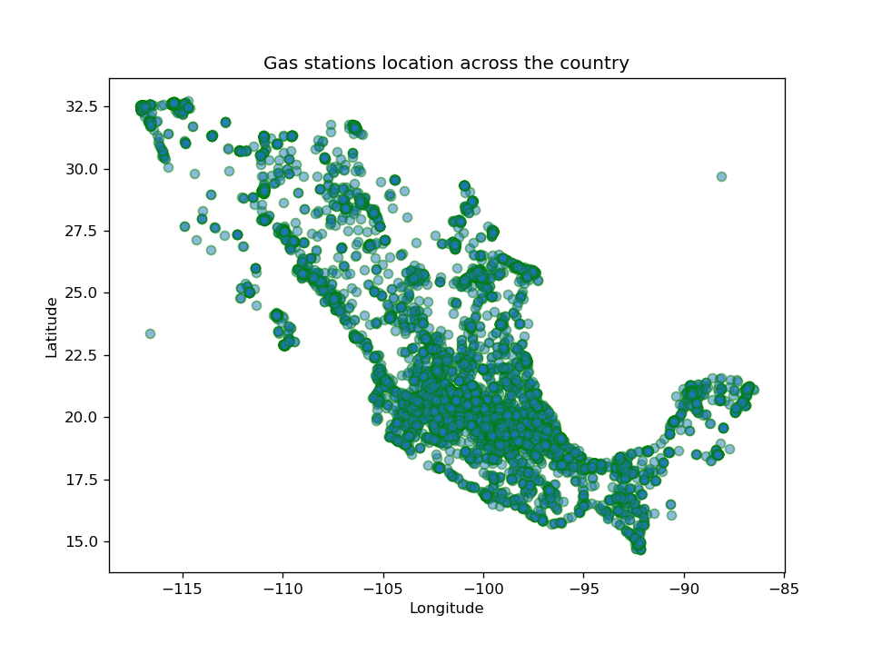

Gas Stations Análisis
This demo is going to present the most relevants results gathered having a main question: What determines the consumer experience in the Mexican Gas Station?
The idea of having an analysis so as to get more information about gas stations and